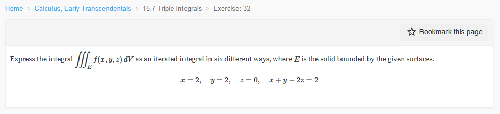

Please solve the problem in the following image.
(Image `20260929_003943_770758_utc_0800_0.png`. Alt text: Image: human_20260929_003943_770758_utc_0800)

20260929_003943_770758_utc_0800_0.png
End of problem
Answer
# Expressing $\iiint_E f(x,y,z)\,dV$ in Six Orders
## Step 1: Understand the geometry
The solid $E$ is bounded by the planes:
$$
x = 2, \qquad y = 2, \qquad z = 0, \qquad x + y - 2z = 2
$$
**Rewrite the slanted plane** as $z = \dfrac{x+y-2}{2}$.
**Find the vertices** by intersecting the boundary planes three at a time:
- $x=2,\ y=2,\ z=0 \;\Rightarrow\; (2,2,0)$
- $x=2,\ y=2,$ plane $\Rightarrow z = \tfrac{2+2-2}{2} = 1 \;\Rightarrow\; (2,2,1)$
- $x=2,\ z=0,$ plane $\Rightarrow y = 0 \;\Rightarrow\; (2,0,0)$
- $y=2,\ z=0,$ plane $\Rightarrow x = 0 \;\Rightarrow\; (0,2,0)$
So $E$ is a **tetrahedron** with these four vertices, sitting above the triangle in the plane $z=0$ cut off by $x+y \ge 2$, $x \le 2$, $y \le 2$.
---
pgfplots_0.png
---
## Step 2: Derive the three projections
Each choice of inner variable corresponds to projecting $E$ onto one of the three coordinate planes (each bounded by two of the planes $x=2$, $y=2$, $z=0$ together with the slanted plane):
**(a) $z$ inner — project onto the $xy$-plane.** Solving the slanted plane for $z$:
$$
0 \le z \le \frac{x+y-2}{2}
$$
The shadow $D_{xy}$ is where $z \ge 0$, i.e. $x + y \ge 2$, together with $x \le 2$, $y \le 2$. For each fixed $x \in [0,2]$, $y$ runs from the line $x+y=2$ up to $y=2$:
$$
D_{xy} = \{(x,y) : 0 \le x \le 2,\; 2-x \le y \le 2\}
$$
**(b) $x$ inner — project onto the $yz$-plane.** Solving for $x$:
$$
x + y - 2z = 2 \;\Longrightarrow\; x = 2 - y + 2z
$$
so $2 - y + 2z \le x \le 2$. The shadow $D_{yz}$ is where $x \le 2$ holds automatically, i.e. $y \ge 2z$, with $z \ge 0$, $y \le 2$. For each fixed $y \in [0,2]$, $z$ runs from $0$ up to $y/2$:
$$
D_{yz} = \{(y,z) : 0 \le y \le 2,\; 0 \le z \le y/2\}
$$
**(c) $y$ inner — project onto the $xz$-plane.** By symmetry with (b):
$$
y = 2 - x + 2z, \qquad D_{xz} = \{(x,z) : 0 \le x \le 2,\; 0 \le z \le x/2\}
$$
so $2 - x + 2z \le y \le 2$.
---
pgfplots_1.png
---
## Step 3: Write the six iterated integrals
**Orders 1 & 2 — $z$ inner (projection $D_{xy}$):**
$$
\iiint_E f\,dV = \int_0^2 \!\!\int_{2-x}^{2} \!\!\int_0^{\frac{x+y-2}{2}} f(x,y,z)\, dz\, dy\, dx
$$
$$
\iiint_E f\,dV = \int_0^2 \!\!\int_{2-y}^{2} \!\!\int_0^{\frac{x+y-2}{2}} f(x,y,z)\, dz\, dx\, dy
$$
**Orders 3 & 4 — $y$ inner (projection $D_{xz}$):**
$$
\iiint_E f\,dV = \int_0^2 \!\!\int_0^{\frac{x}{2}} \!\!\int_{2-x+2z}^{2} f(x,y,z)\, dy\, dz\, dx
$$
$$
\iiint_E f\,dV = \int_0^2 \!\!\int_0^{\frac{x}{2}} \!\!\int_{2-x+2z}^{2} f(x,y,z)\, dy\, dx\, dz
$$
**Orders 5 & 6 — $x$ inner (projection $D_{yz}$):**
$$
\iiint_E f\,dV = \int_0^2 \!\!\int_0^{\frac{y}{2}} \!\!\int_{2-y+2z}^{2} f(x,y,z)\, dx\, dz\, dy
$$
$$
\iiint_E f\,dV = \int_0^2 \!\!\int_0^{\frac{y}{2}} \!\!\int_{2-y+2z}^{2} f(x,y,z)\, dx\, dy\, dz
$$
## Step 4: Verification
All six orders were checked with $f \equiv 1$ against the tetrahedron volume formula $V = \tfrac{1}{6}|\det[e_1\; e_2\; e_3]|$ with edges from $(2,2,0)$:
$$
e_1 = (0,-2,0), \quad e_2 = (-2,0,0), \quad e_3 = (0,0,1)
$$
$$
V = \frac{1}{6}\,|\,(-2)(-2)(1)\,| = \frac{4}{6} = \frac{2}{3}
$$
Every one of the six iterated integrals evaluates to exactly $\dfrac{2}{3}$ ✓
## Key takeaways for this kind of problem
1. **Sketch first.** Find the vertices by intersecting boundary surfaces three at a time; this reveals the shape (here a tetrahedron).
2. **Solve the slanted surface for the inner variable.** For $z$ inner use $z = \frac{x+y-2}{2}$; for $x$ or $y$ inner use $x = 2-y+2z$ or $y = 2-x+2z$.
3. **The projection is the set where the inner bounds make sense.** E.g. for $z$ inner, requiring $z \ge 0$ forces $x+y \ge 2$ — that inequality defines the triangular shadow, not $x+y \le 2$.
4. **Check with volume.** Setting $f = 1$, all six orders must agree; here each gives $\frac{2}{3}$, confirming every set of limits.